Inferring modular network structure¶
graph-tool includes algorithms to identify the large-scale structure
of networks in the inference submodule. Here we
explain the basic functionality with self-contained examples. For a more
thorough theoretical introduction to the methods described here, the
reader is referred to [peixoto-bayesian-2017].
Background: Nonparametric statistical inference¶
A common task when analyzing networks is to characterize their structures in simple terms, often by dividing the nodes into modules or “communities”.
A principled approach to perform this task is to formulate generative models that include the idea of “modules” in their descriptions, which then can be detected by inferring the model parameters from data. More precisely, given the partition \(\boldsymbol b = \{b_i\}\) of the network into \(B\) groups, where \(b_i\in[0,B-1]\) is the group membership of node \(i\), we define a model that generates a network \(\boldsymbol G\) with a probability
where \(\boldsymbol\theta\) are additional model parameters that control how the node partition affects the structure of the network. Therefore, if we observe a network \(\boldsymbol G\), the likelihood that it was generated by a given partition \(\boldsymbol b\) is obtained via the Bayesian posterior probability
where \(P(\boldsymbol\theta, \boldsymbol b)\) is the prior probability of the model parameters, and
is called the evidence, and corresponds to the total probability of the data summed over all model parameters. The particular types of model that will be considered here have “hard constraints”, such that there is only one choice for the remaining parameters \(\boldsymbol\theta\) that is compatible with the generated network, such that Eq. (2) simplifies to
with \(\boldsymbol\theta\) above being the only choice compatible with \(\boldsymbol G\) and \(\boldsymbol b\). The inference procedures considered here will consist in either finding a network partition that maximizes Eq. (4), or sampling different partitions according its posterior probability.
As we will show below, this approach also enables the comparison of different models according to statistical evidence (a.k.a. model selection).
Minimum description length (MDL)¶
We note that Eq. (4) can be written as
where
is called the description length of the network \(\boldsymbol G\). It measures the amount of information required to describe the data, if we encode it using the particular parametrization of the generative model given by \(\boldsymbol\theta\) and \(\boldsymbol b\), as well as the parameters themselves. Therefore, if we choose to maximize the posterior distribution of Eq. (4) it will be fully equivalent to the so-called minimum description length method. This approach corresponds to an implementation of Occam’s razor, where the simplest model is selected, among all possibilities with the same explanatory power. The selection is based on the statistical evidence available, and therefore will not overfit, i.e. mistake stochastic fluctuations for actual structure. In particular this means that we will not find modules in networks if they could have arisen simply because of stochastic fluctuations, as they do in fully random graphs [guimera-modularity-2004].
The stochastic block model (SBM)¶
The stochastic block model is arguably the simplest generative process based on the notion of groups of nodes [holland-stochastic-1983]. The microcanonical formulation [peixoto-nonparametric-2017] of the basic or “traditional” version takes as parameters the partition of the nodes into groups \(\boldsymbol b\) and a \(B\times B\) matrix of edge counts \(\boldsymbol e\), where \(e_{rs}\) is the number of edges between groups \(r\) and \(s\). Given these constraints, the edges are then placed randomly. Hence, nodes that belong to the same group possess the same probability of being connected with other nodes of the network.
An example of a possible parametrization is given in the following figure.
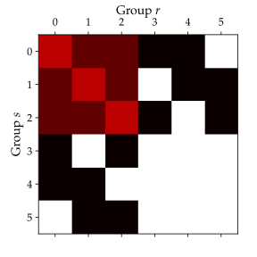
Matrix of edge counts \(\boldsymbol e\) between groups. |

Generated network. |
{kind=link}
Note
We emphasize that no constraints are imposed on what kind of modular structure is allowed, as the matrix of edge counts \(e\) is unconstrained. Hence, we can detect the putatively typical pattern of “community structure”, i.e. when nodes are connected mostly to other nodes of the same group, if it happens to be the most likely network description, but we can also detect a large multiplicity of other patterns, such as bipartiteness, core-periphery, and many others, all under the same inference framework.
Although quite general, the traditional model assumes that the edges are placed randomly inside each group, and because of this the nodes that belong to the same group tend to have very similar degrees. As it turns out, this is often a poor model for many networks, which possess highly heterogeneous degree distributions. A better model for such networks is called the degree-corrected stochastic block model [karrer-stochastic-2011], and it is defined just like the traditional model, with the addition of the degree sequence \(\boldsymbol k = \{k_i\}\) of the graph as an additional set of parameters (assuming again a microcanonical formulation [peixoto-nonparametric-2017]).
The nested stochastic block model¶
The regular SBM has a drawback when applied to large networks. Namely, it cannot be used to find relatively small groups, as the maximum number of groups that can be found scales as \(B_{\text{max}}=O(\sqrt{N})\), where \(N\) is the number of nodes in the network, if Bayesian inference is performed [peixoto-parsimonious-2013]. In order to circumvent this, we need to replace the noninformative priors used by a hierarchy of priors and hyperpriors, which amounts to a nested SBM, where the groups themselves are clustered into groups, and the matrix \(e\) of edge counts are generated from another SBM, and so on recursively [peixoto-hierarchical-2014], as illustrated below.

Example of a nested SBM with three levels.
With this model, the maximum number of groups that can be inferred scales as \(B_{\text{max}}=O(N/\log(N))\). In addition to being able to find small groups in large networks, this model also provides a multilevel hierarchical description of the network. With such a description, we can uncover structural patterns at multiple scales, representing different levels of coarse-graining.
Inferring the best partition¶
The simplest and most efficient approach is to find the best
partition of the network by maximizing Eq. (4)
according to some version of the model. This is obtained via the
functions minimize_blockmodel_dl() or
minimize_nested_blockmodel_dl(), which
employs an agglomerative multilevel Markov chain Monte Carlo (MCMC) algorithm
[peixoto-efficient-2014].
We focus first on the non-nested model, and we illustrate its use with a
network of American football teams, which we load from the
collection module:
g = gt.collection.data["football"]
print(g)
which yields
<Graph object, undirected, with 115 vertices and 613 edges at 0x...>
we then fit the degree-corrected model by calling
state = gt.minimize_blockmodel_dl(g)
This returns a BlockState object that
includes the inference results.
Note
The inference algorithm used is stochastic by nature, and may return a different answer each time it is run. This may be due to the fact that there are alternative partitions with similar probabilities, or that the optimum is difficult to find. Note that the inference problem here is, in general, NP-Hard, hence there is no efficient algorithm that is guaranteed to always find the best answer.
Because of this, typically one would call the algorithm many times,
and select the partition with the largest posterior probability of
Eq. (4), or equivalently, the minimum description
length of Eq. (5). The description length of a fit can be
obtained with the entropy()
method. See also Sec. Hierarchical partitions below.
We may perform a drawing of the partition obtained via the
draw method, that functions as a
convenience wrapper to the graph_draw() function
state.draw(pos=g.vp.pos, output="football-sbm-fit.svg")
which yields the following image.
{kind=link}
Stochastic block model inference of a network of American college football teams. The colors correspond to inferred group membership of the nodes.
We can obtain the group memberships as a
PropertyMap on the vertices via the
get_blocks method:
b = state.get_blocks()
r = b[10] # group membership of vertex 10
print(r)
which yields:
3
We may also access the matrix of edge counts between groups via
get_matrix
e = state.get_matrix()
matshow(e.todense())
savefig("football-edge-counts.svg")
Matrix of edge counts between groups.
We may obtain the same matrix of edge counts as a graph, which has internal edge and vertex property maps with the edge and vertex counts, respectively:
bg = state.get_bg()
ers = state.mrs # edge counts
nr = state.wr # node counts
Hierarchical partitions¶
The inference of the nested family of SBMs is done in a similar manner,
but we must use instead the
minimize_nested_blockmodel_dl() function. We
illustrate its use with the neural network of the C. elegans worm:
g = gt.collection.data["celegansneural"]
print(g)
which has 297 vertices and 2359 edges.
<Graph object, directed, with 297 vertices and 2359 edges at 0x...>
A hierarchical fit of the degree-corrected model is performed as follows.
state = gt.minimize_nested_blockmodel_dl(g)
The object returned is an instance of a
NestedBlockState class, which
encapsulates the results. We can again draw the resulting hierarchical
clustering using the
draw() method:
state.draw(output="celegans-hsbm-fit.svg")

Most likely hierarchical partition of the neural network of the C. elegans worm according to the nested degree-corrected SBM.
Note
If the output parameter to
draw() is omitted, an
interactive visualization is performed, where the user can re-order
the hierarchy nodes using the mouse and pressing the r key.
A summary of the inferred hierarchy can be obtained with the
print_summary() method,
which shows the number of nodes and groups in all levels:
state.print_summary()
l: 0, N: 297, B: 17
l: 1, N: 17, B: 9
l: 2, N: 9, B: 3
l: 3, N: 3, B: 1
The hierarchical levels themselves are represented by individual
BlockState() instances obtained via the
get_levels() method:
levels = state.get_levels()
for s in levels:
print(s)
<BlockState object with 17 blocks (17 nonempty), degree-corrected, for graph <Graph object, directed, with 297 vertices and 2359 edges at 0x...>, at 0x...>
<BlockState object with 9 blocks (9 nonempty), for graph <Graph object, directed, with 17 vertices and 156 edges at 0x...>, at 0x...>
<BlockState object with 3 blocks (3 nonempty), for graph <Graph object, directed, with 9 vertices and 57 edges at 0x...>, at 0x...>
<BlockState object with 1 blocks (1 nonempty), for graph <Graph object, directed, with 3 vertices and 9 edges at 0x...>, at 0x...>
This means that we can inspect the hierarchical partition just as before:
r = levels[0].get_blocks()[46] # group membership of node 46 in level 0
print(r)
r = levels[0].get_blocks()[r] # group membership of node 46 in level 1
print(r)
r = levels[0].get_blocks()[r] # group membership of node 46 in level 2
print(r)
7
0
0
Model selection¶
As mentioned above, one can select the best model according to the choice that yields the smallest description length [peixoto-model-2016]. For instance, in case of the C. elegans network we have
g = gt.collection.data["celegansneural"]
state_ndc = gt.minimize_nested_blockmodel_dl(g, deg_corr=False)
state_dc = gt.minimize_nested_blockmodel_dl(g, deg_corr=True)
print("Non-degree-corrected DL:\t", state_ndc.entropy())
print("Degree-corrected DL:\t", state_dc.entropy())
Non-degree-corrected DL: 8456.994339...
Degree-corrected DL: 8233.850036...
Since it yields the smallest description length, the degree-corrected fit should be preferred. The statistical significance of the choice can be accessed by inspecting the posterior odds ratio [peixoto-nonparametric-2017]
where \(\mathcal{H}_\text{NDC}\) and \(\mathcal{H}_\text{DC}\) correspond to the non-degree-corrected and degree-corrected model hypotheses (assumed to be equally likely a priori), respectively, and \(\Delta\Sigma\) is the difference of the description length of both fits. In our particular case, we have
print(u"ln \u039b: ", state_dc.entropy() - state_ndc.entropy())
ln Λ: -223.144303...
The precise threshold that should be used to decide when to reject a hypothesis is subjective and context-dependent, but the value above implies that the particular degree-corrected fit is around \(\mathrm{e}^{233} \approx 10^{96}\) times more likely than the non-degree corrected one, and hence it can be safely concluded that it provides a substantially better fit.
Although it is often true that the degree-corrected model provides a better fit for many empirical networks, there are also exceptions. For example, for the American football network above, we have:
g = gt.collection.data["football"]
state_ndc = gt.minimize_nested_blockmodel_dl(g, deg_corr=False)
state_dc = gt.minimize_nested_blockmodel_dl(g, deg_corr=True)
print("Non-degree-corrected DL:\t", state_ndc.entropy())
print("Degree-corrected DL:\t", state_dc.entropy())
print(u"ln \u039b:\t\t\t", state_ndc.entropy() - state_dc.entropy())
Non-degree-corrected DL: 1734.814739...
Degree-corrected DL: 1780.576716...
ln Λ: -45.761977...
Hence, with a posterior odds ratio of \(\Lambda \approx \mathrm{e}^{-45} \approx 10^{-19}\) in favor of the non-degree-corrected model, it seems like the degree-corrected variant is an unnecessarily complex description for this network.
Sampling from the posterior distribution¶
When analyzing empirical networks, one should be open to the possibility that there will be more than one fit of the SBM with similar posterior probabilities. In such situations, one should instead sample partitions from the posterior distribution, instead of simply finding its maximum. One can then compute quantities that are averaged over the different model fits, weighted according to their posterior probabilities.
Full support for model averaging is implemented in graph-tool via an
efficient Markov chain Monte Carlo (MCMC) algorithm
[peixoto-efficient-2014]. It works by attempting to move nodes into
different groups with specific probabilities, and accepting or
rejecting
such moves so that, after a sufficiently long time, the partitions will
be observed with the desired posterior probability. The algorithm is
designed so that its run-time (i.e. each sweep of the MCMC) is linear on
the number of edges in the network, and independent on the number of
groups being used in the model, and hence is suitable for use on very
large networks.
In order to perform such moves, one needs again to operate with
BlockState or
NestedBlockState instances, and calling
their mcmc_sweep() methods. For
example, the following will perform 1000 sweeps of the algorithm with
the network of characters in the novel Les Misérables, starting from a
random partition into 20 groups
g = gt.collection.data["lesmis"]
state = gt.BlockState(g, B=20) # This automatically initializes the state
# with a random partition into B=20
# nonempty groups; The user could
# also pass an arbitrary initial
# partition using the 'b' parameter.
# Now we run 1,000 sweeps of the MCMC. Note that the number of groups
# is allowed to change, so it will eventually move from the initial
# value of B=20 to whatever is most appropriate for the data.
dS, nattempts, nmoves = state.mcmc_sweep(niter=1000)
print("Change in description length:", dS)
print("Number of accepted vertex moves:", nmoves)
Change in description length: -365.317522...
Number of accepted vertex moves: 38213
Note
Starting from a random partition is rarely the best option, since it
may take a long time for it to equilibrate. It was done above simply
as an illustration on how to initialize
BlockState by hand. Instead, a much
better option in practice is to start from an approximation to the
“ground state” obtained with
minimize_blockmodel_dl(), e.g.
state = gt.minimize_blockmodel_dl(g) state = state.copy(B=g.num_vertices()) dS, nattempts, nmoves = state.mcmc_sweep(niter=1000) print("Change in description length:", dS) print("Number of accepted vertex moves:", nmoves)Change in description length: 1.660677... Number of accepted vertex moves: 40461
Although the above is sufficient to implement model averaging, there is a
convenience function called
mcmc_equilibrate() that is intend to
simplify the detection of equilibration, by keeping track of the maximum
and minimum values of description length encountered and how many sweeps
have been made without a “record breaking” event. For example,
# We will accept equilibration if 10 sweeps are completed without a
# record breaking event, 2 consecutive times.
gt.mcmc_equilibrate(state, wait=10, nbreaks=2, mcmc_args=dict(niter=10), verbose=True)
will output:
niter: 1 count: 0 breaks: 0 min_S: 706.26857 max_S: 708.14483 S: 708.14483 ΔS: 1.87626 moves: 418
niter: 2 count: 0 breaks: 0 min_S: 699.23453 max_S: 708.14483 S: 699.23453 ΔS: -8.91030 moves: 409
niter: 3 count: 0 breaks: 0 min_S: 699.23453 max_S: 715.33531 S: 715.33531 ΔS: 16.1008 moves: 414
niter: 4 count: 0 breaks: 0 min_S: 699.23453 max_S: 723.13301 S: 723.13301 ΔS: 7.79770 moves: 391
niter: 5 count: 1 breaks: 0 min_S: 699.23453 max_S: 723.13301 S: 702.93354 ΔS: -20.1995 moves: 411
niter: 6 count: 2 breaks: 0 min_S: 699.23453 max_S: 723.13301 S: 706.39029 ΔS: 3.45675 moves: 389
niter: 7 count: 3 breaks: 0 min_S: 699.23453 max_S: 723.13301 S: 706.80859 ΔS: 0.418293 moves: 404
niter: 8 count: 4 breaks: 0 min_S: 699.23453 max_S: 723.13301 S: 707.61960 ΔS: 0.811010 moves: 417
niter: 9 count: 5 breaks: 0 min_S: 699.23453 max_S: 723.13301 S: 706.46577 ΔS: -1.15383 moves: 392
niter: 10 count: 6 breaks: 0 min_S: 699.23453 max_S: 723.13301 S: 714.34671 ΔS: 7.88094 moves: 410
niter: 11 count: 7 breaks: 0 min_S: 699.23453 max_S: 723.13301 S: 706.43194 ΔS: -7.91477 moves: 383
niter: 12 count: 8 breaks: 0 min_S: 699.23453 max_S: 723.13301 S: 705.19434 ΔS: -1.23760 moves: 405
niter: 13 count: 9 breaks: 0 min_S: 699.23453 max_S: 723.13301 S: 702.21395 ΔS: -2.98039 moves: 423
niter: 14 count: 0 breaks: 1 min_S: 715.54878 max_S: 715.54878 S: 715.54878 ΔS: 13.3348 moves: 400
niter: 15 count: 0 breaks: 1 min_S: 715.54878 max_S: 716.65842 S: 716.65842 ΔS: 1.10964 moves: 413
niter: 16 count: 0 breaks: 1 min_S: 701.19994 max_S: 716.65842 S: 701.19994 ΔS: -15.4585 moves: 382
niter: 17 count: 1 breaks: 1 min_S: 701.19994 max_S: 716.65842 S: 715.56997 ΔS: 14.3700 moves: 394
niter: 18 count: 0 breaks: 1 min_S: 701.19994 max_S: 719.25577 S: 719.25577 ΔS: 3.68580 moves: 404
niter: 19 count: 0 breaks: 1 min_S: 701.19994 max_S: 723.78811 S: 723.78811 ΔS: 4.53233 moves: 413
niter: 20 count: 1 breaks: 1 min_S: 701.19994 max_S: 723.78811 S: 709.77340 ΔS: -14.0147 moves: 387
niter: 21 count: 2 breaks: 1 min_S: 701.19994 max_S: 723.78811 S: 714.14891 ΔS: 4.37551 moves: 419
niter: 22 count: 3 breaks: 1 min_S: 701.19994 max_S: 723.78811 S: 722.05875 ΔS: 7.90984 moves: 399
niter: 23 count: 4 breaks: 1 min_S: 701.19994 max_S: 723.78811 S: 714.32503 ΔS: -7.73371 moves: 422
niter: 24 count: 5 breaks: 1 min_S: 701.19994 max_S: 723.78811 S: 708.53927 ΔS: -5.78576 moves: 392
niter: 25 count: 6 breaks: 1 min_S: 701.19994 max_S: 723.78811 S: 714.05889 ΔS: 5.51962 moves: 404
niter: 26 count: 7 breaks: 1 min_S: 701.19994 max_S: 723.78811 S: 713.93196 ΔS: -0.126937 moves: 414
niter: 27 count: 8 breaks: 1 min_S: 701.19994 max_S: 723.78811 S: 709.49863 ΔS: -4.43333 moves: 410
niter: 28 count: 9 breaks: 1 min_S: 701.19994 max_S: 723.78811 S: 707.42167 ΔS: -2.07696 moves: 397
niter: 29 count: 0 breaks: 1 min_S: 699.89982 max_S: 723.78811 S: 699.89982 ΔS: -7.52185 moves: 388
niter: 30 count: 0 breaks: 1 min_S: 698.57305 max_S: 723.78811 S: 698.57305 ΔS: -1.32677 moves: 391
niter: 31 count: 1 breaks: 1 min_S: 698.57305 max_S: 723.78811 S: 706.02629 ΔS: 7.45324 moves: 412
niter: 32 count: 2 breaks: 1 min_S: 698.57305 max_S: 723.78811 S: 701.97778 ΔS: -4.04852 moves: 421
niter: 33 count: 3 breaks: 1 min_S: 698.57305 max_S: 723.78811 S: 707.50134 ΔS: 5.52356 moves: 410
niter: 34 count: 4 breaks: 1 min_S: 698.57305 max_S: 723.78811 S: 708.56686 ΔS: 1.06552 moves: 424
niter: 35 count: 0 breaks: 1 min_S: 698.57305 max_S: 724.07361 S: 724.07361 ΔS: 15.5067 moves: 399
niter: 36 count: 1 breaks: 1 min_S: 698.57305 max_S: 724.07361 S: 723.51969 ΔS: -0.553915 moves: 384
niter: 37 count: 2 breaks: 1 min_S: 698.57305 max_S: 724.07361 S: 702.36708 ΔS: -21.1526 moves: 406
niter: 38 count: 3 breaks: 1 min_S: 698.57305 max_S: 724.07361 S: 707.60129 ΔS: 5.23420 moves: 405
niter: 39 count: 4 breaks: 1 min_S: 698.57305 max_S: 724.07361 S: 709.67542 ΔS: 2.07413 moves: 400
niter: 40 count: 5 breaks: 1 min_S: 698.57305 max_S: 724.07361 S: 714.52753 ΔS: 4.85212 moves: 398
niter: 41 count: 6 breaks: 1 min_S: 698.57305 max_S: 724.07361 S: 707.86563 ΔS: -6.66190 moves: 409
niter: 42 count: 7 breaks: 1 min_S: 698.57305 max_S: 724.07361 S: 718.80926 ΔS: 10.9436 moves: 400
niter: 43 count: 8 breaks: 1 min_S: 698.57305 max_S: 724.07361 S: 716.37312 ΔS: -2.43615 moves: 378
niter: 44 count: 9 breaks: 1 min_S: 698.57305 max_S: 724.07361 S: 713.76944 ΔS: -2.60368 moves: 399
niter: 45 count: 10 breaks: 2 min_S: 698.57305 max_S: 724.07361 S: 715.29009 ΔS: 1.52066 moves: 421
Note that the value of wait above was made purposefully low so that
the output would not be overly long. The most appropriate value requires
experimentation, but a typically good value is wait=1000.
The function mcmc_equilibrate() accepts a
callback argument that takes an optional function to be invoked
after each call to
mcmc_sweep(). This function
should accept a single parameter which will contain the actual
BlockState instance. We will use this in
the example below to collect the posterior vertex marginals (via
collect_vertex_marginals),
i.e. the posterior probability that a node belongs to a given group:
# We will first equilibrate the Markov chain
gt.mcmc_equilibrate(state, wait=1000, mcmc_args=dict(niter=10))
pv = None
def collect_marginals(s):
global pv
pv = s.collect_vertex_marginals(pv)
# Now we collect the marginals for exactly 100,000 sweeps, at
# intervals of 10 sweeps:
gt.mcmc_equilibrate(state, force_niter=10000, mcmc_args=dict(niter=10),
callback=collect_marginals)
# Now the node marginals are stored in property map pv. We can
# visualize them as pie charts on the nodes:
state.draw(pos=g.vp.pos, vertex_shape="pie", vertex_pie_fractions=pv,
edge_gradient=None, output="lesmis-sbm-marginals.svg")
{kind=link}
Marginal probabilities of group memberships of the network of characters in the novel Les Misérables, according to the degree-corrected SBM. The pie fractions on the nodes correspond to the probability of being in group associated with the respective color.
We can also obtain a marginal probability on the number of groups itself, as follows.
h = np.zeros(g.num_vertices() + 1)
def collect_num_groups(s):
B = s.get_nonempty_B()
h[B] += 1
# Now we collect the marginals for exactly 100,000 sweeps, at
# intervals of 10 sweeps:
gt.mcmc_equilibrate(state, force_niter=10000, mcmc_args=dict(niter=10),
callback=collect_num_groups)
Marginal posterior probability of the number of nonempty groups for the network of characters in the novel Les Misérables, according to the degree-corrected SBM.
Hierarchical partitions¶
We can also perform model averaging using the nested SBM, which will
give us a distribution over hierarchies. The whole procedure is fairly
analogous, but now we make use of
NestedBlockState instances.
Note
When using NestedBlockState instances
to perform model averaging, they need to be constructed with the
option sampling=True.
Here we perform the sampling of hierarchical partitions using the same network as above.
g = gt.collection.data["lesmis"]
state = gt.minimize_nested_blockmodel_dl(g) # Initialize he Markov
# chain from the "ground
# state"
# Before doing model averaging, the need to create a NestedBlockState
# by passing sampling = True.
# We also want to increase the maximum hierarchy depth to L = 10
# We can do both of the above by copying.
bs = state.get_bs() # Get hierarchical partition.
bs += [np.zeros(1)] * (10 - len(bs)) # Augment it to L = 10 with
# single-group levels.
state = state.copy(bs=bs, sampling=True)
# Now we run 1000 sweeps of the MCMC
dS, nattempts, nmoves = state.mcmc_sweep(niter=1000)
print("Change in description length:", dS)
print("Number of accepted vertex moves:", nmoves)
Change in description length: 2.371018...
Number of accepted vertex moves: 56087
Similarly to the the non-nested case, we can use
mcmc_equilibrate() to do most of the boring
work, and we can now obtain vertex marginals on all hierarchical levels:
# We will first equilibrate the Markov chain
gt.mcmc_equilibrate(state, wait=1000, mcmc_args=dict(niter=10))
pv = [None] * len(state.get_levels())
def collect_marginals(s):
global pv
pv = [sl.collect_vertex_marginals(pv[l]) for l, sl in enumerate(s.get_levels())]
# Now we collect the marginals for exactly 100,000 sweeps
gt.mcmc_equilibrate(state, force_niter=10000, mcmc_args=dict(niter=10),
callback=collect_marginals)
# Now the node marginals for all levels are stored in property map
# list pv. We can visualize the first level as pie charts on the nodes:
state_0 = state.get_levels()[0]
state_0.draw(pos=g.vp.pos, vertex_shape="pie", vertex_pie_fractions=pv[0],
edge_gradient=None, output="lesmis-nested-sbm-marginals.svg")
{kind=link}
Marginal probabilities of group memberships of the network of characters in the novel Les Misérables, according to the nested degree-corrected SBM. The pie fractions on the nodes correspond to the probability of being in group associated with the respective color.
We can also obtain a marginal probability of the number of groups itself, as follows.
h = [np.zeros(g.num_vertices() + 1) for s in state.get_levels()]
def collect_num_groups(s):
for l, sl in enumerate(s.get_levels()):
B = sl.get_nonempty_B()
h[l][B] += 1
# Now we collect the marginal distribution for exactly 100,000 sweeps
gt.mcmc_equilibrate(state, force_niter=10000, mcmc_args=dict(niter=10),
callback=collect_num_groups)
Marginal posterior probability of the number of nonempty groups \(B_l\) at each hierarchy level \(l\) for the network of characters in the novel Les Misérables, according to the nested degree-corrected SBM.
Below we obtain some hierarchical partitions sampled from the posterior distribution.
for i in range(10):
state.mcmc_sweep(niter=1000)
state.draw(output="lesmis-partition-sample-%i.svg" % i, empty_branches=False)
 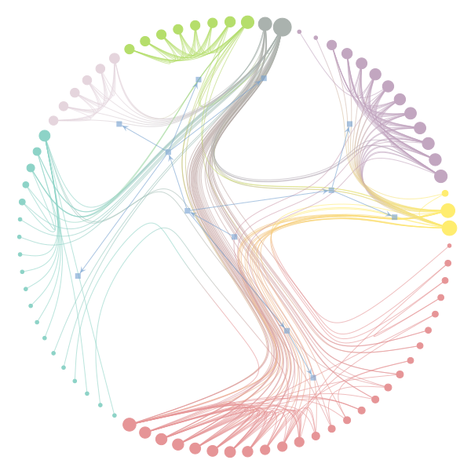
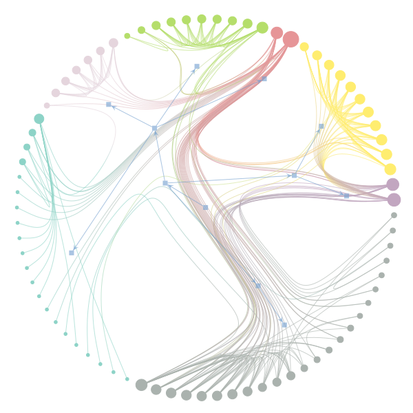
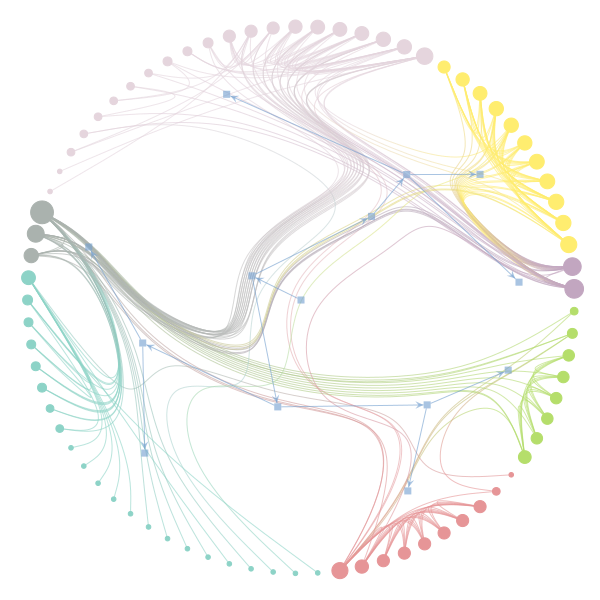
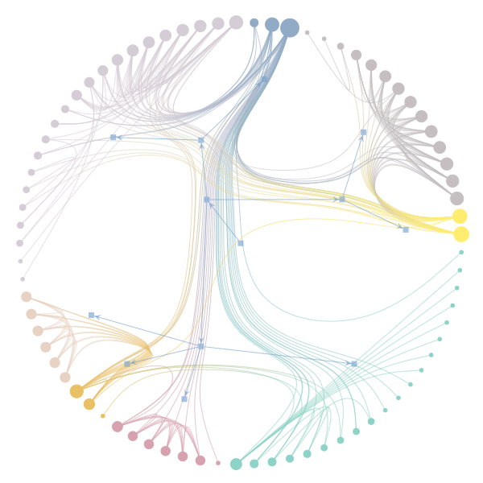
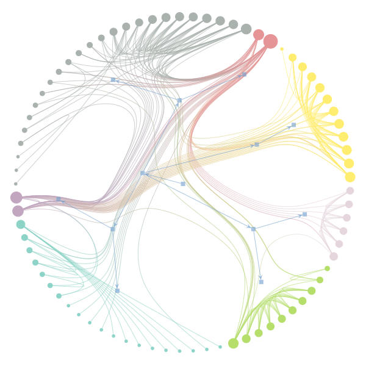
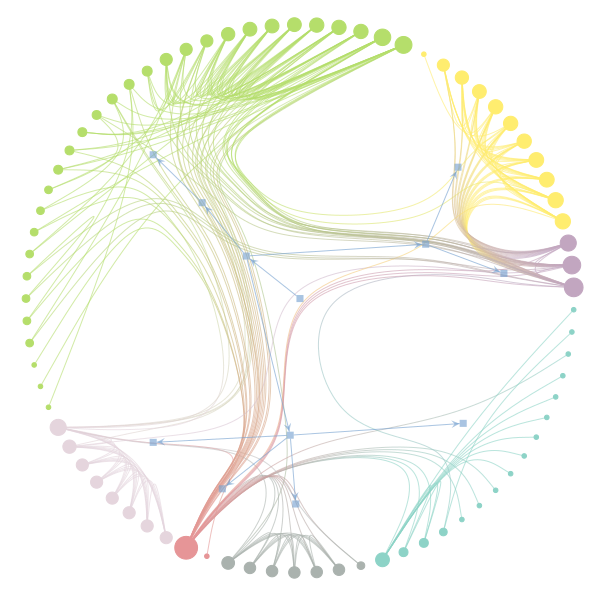
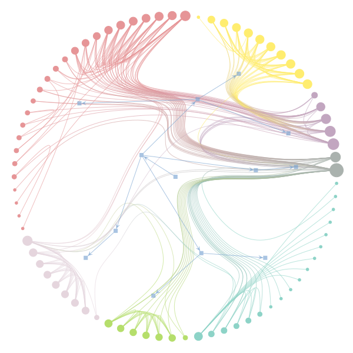
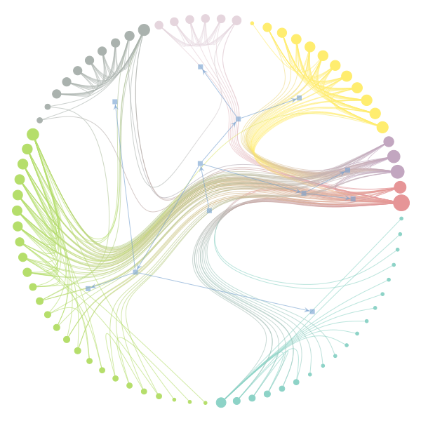
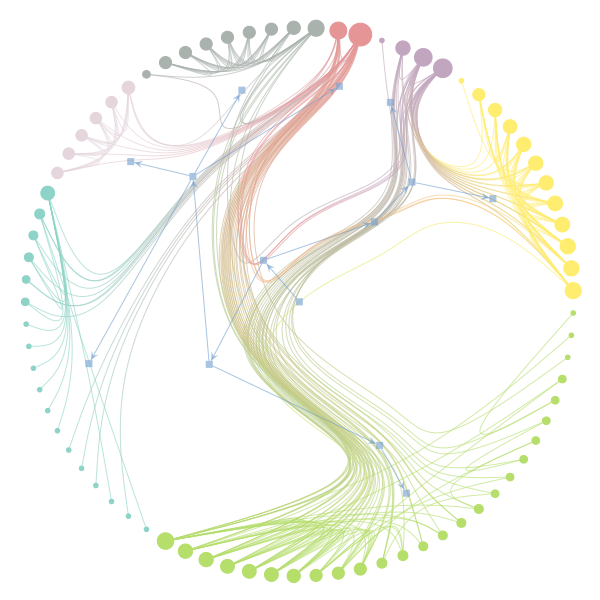
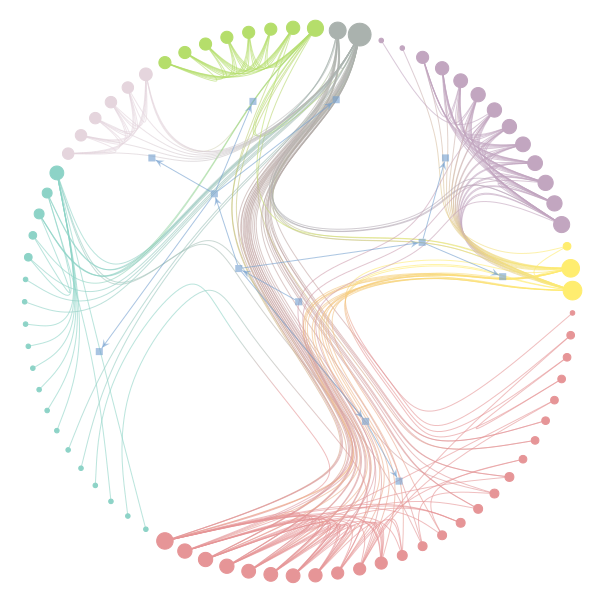
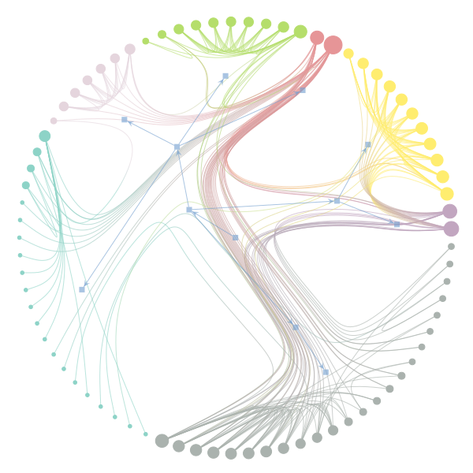
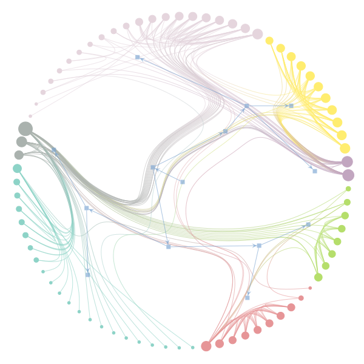
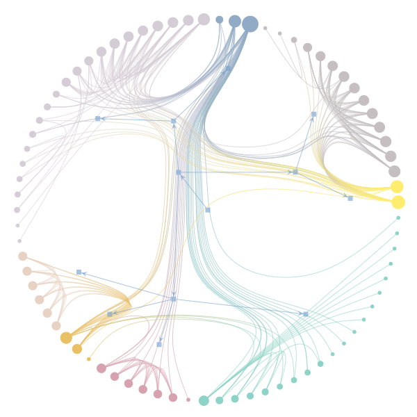
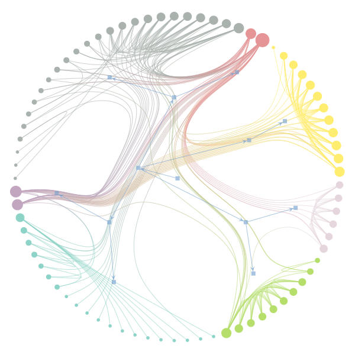
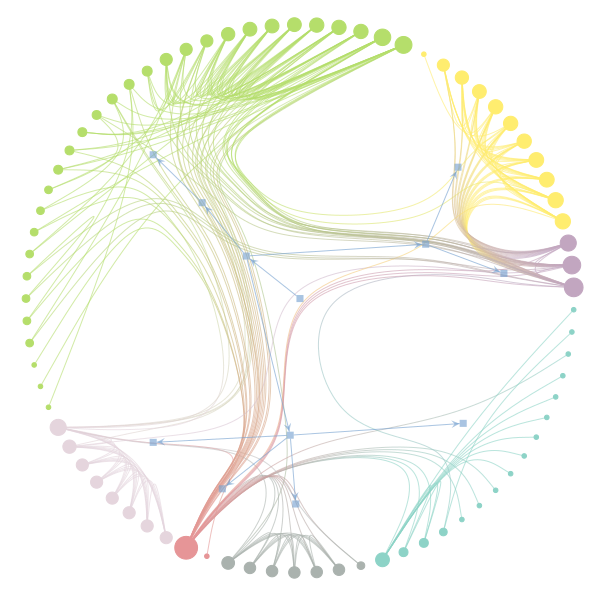
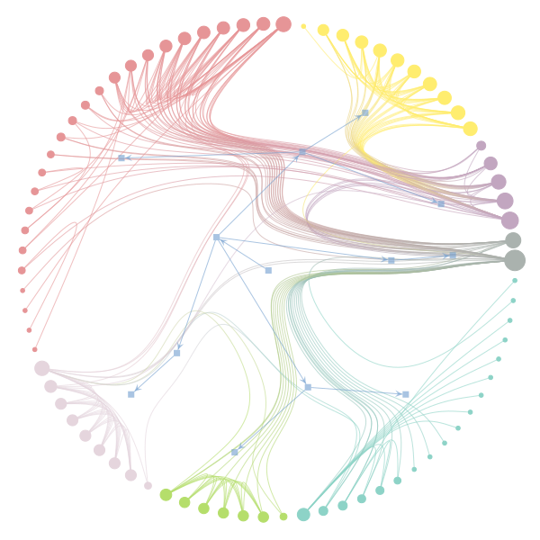
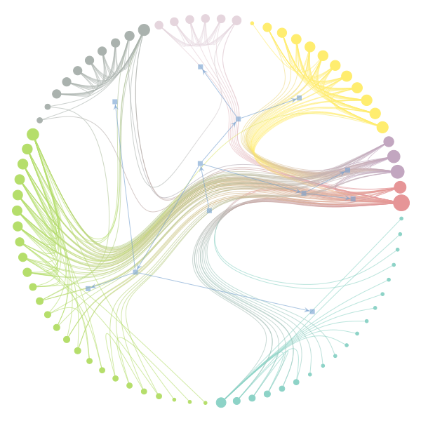
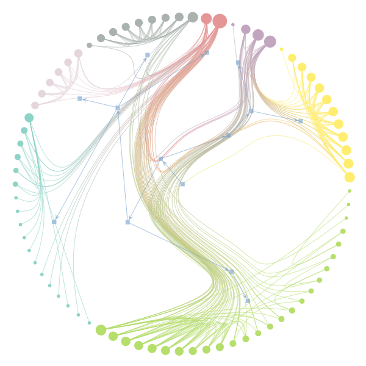
{kind=link}
{kind=link}
{kind=link}
{kind=link}
{kind=link}
{kind=link}
{kind=link}
{kind=link}
{kind=link}
Model class selection¶
When averaging over partitions, we may be interested in evaluating which model class provides a better fit of the data, considering all possible parameter choices. This is done by evaluating the model evidence summed over all possible partitions [peixoto-nonparametric-2017]:
This quantity is analogous to a partition function in statistical physics, which we can write more conveniently as a negative free energy by taking its logarithm
where
is the posterior probability of partition \(\boldsymbol b\). The first term of Eq. (6) (the “negative energy”) is minus the average of description length \(\left<\Sigma\right>\), weighted according to the posterior distribution. The second term \(\mathcal{S}\) is the entropy of the posterior distribution, and measures, in a sense, the “quality of fit” of the model: If the posterior is very “peaked”, i.e. dominated by a single partition with a very large probability, the entropy will tend to zero. However, if there are many partitions with similar probabilities — meaning that there is no single partition that describes the network uniquely well — it will take a large value instead.
Since the MCMC algorithm samples partitions from the distribution \(q(\boldsymbol b)\), it can be used to compute \(\left<\Sigma\right>\) easily, simply by averaging the description length values encountered by sampling from the posterior distribution many times.
The computation of the posterior entropy \(\mathcal{S}\), however,
is significantly more difficult, since it involves measuring the precise
value of \(q(\boldsymbol b)\). A direct “brute force” computation of
\(\mathcal{S}\) is implemented via
collect_partition_histogram() and
microstate_entropy(), however this is only
feasible for very small networks. For larger networks, we are forced to
perform approximations. The simplest is a “mean field” one, where we
assume the posterior factorizes as
where
is the marginal group membership distribution of node \(i\). This yields an entropy value given by
This approximation should be seen as an upper bound, since any existing correlation between the nodes (which are ignored here) will yield smaller entropy values.
A more accurate assumption is called the Bethe approximation [mezard-information-2009], and takes into account the correlation between adjacent nodes in the network,
where \(A_{ij}\) is the adjacency matrix, \(k_i\) is the degree of node \(i\), and
is the joint group membership distribution of nodes \(i\) and \(j\) (a.k.a. the edge marginals). This yields an entropy value given by
Typically, this approximation yields smaller values than the mean field one, and is generally considered to be superior. However, formally, it depends on the graph being sufficiently locally “tree-like”, and the posterior being indeed strongly correlated with the adjacency matrix itself — two characteristics which do not hold in general. Although the approximation often gives reasonable results even when these conditions do not strictly hold, in some situations when they are strongly violated this approach can yield meaningless values, such as a negative entropy. Therefore, it is useful to compare both approaches whenever possible.
With these approximations, it possible to estimate the full model
evidence efficiently, as we show below, using
collect_vertex_marginals(),
collect_edge_marginals(),
mf_entropy() and
bethe_entropy().
g = gt.collection.data["lesmis"]
for deg_corr in [True, False]:
state = gt.minimize_blockmodel_dl(g, deg_corr=deg_corr) # Initialize the Markov
# chain from the "ground
# state"
state = state.copy(B=g.num_vertices())
dls = [] # description length history
vm = None # vertex marginals
em = None # edge marginals
def collect_marginals(s):
global vm, em
vm = s.collect_vertex_marginals(vm)
em = s.collect_edge_marginals(em)
dls.append(s.entropy())
# Now we collect the marginal distributions for exactly 200,000 sweeps
gt.mcmc_equilibrate(state, force_niter=20000, mcmc_args=dict(niter=10),
callback=collect_marginals)
S_mf = gt.mf_entropy(g, vm)
S_bethe = gt.bethe_entropy(g, em)[0]
L = -mean(dls)
print("Model evidence for deg_corr = %s:" % deg_corr,
L + S_mf, "(mean field),", L + S_bethe, "(Bethe)")
Model evidence for deg_corr = True: -569.590426... (mean field), -817.788531... (Bethe)
Model evidence for deg_corr = False: -587.028530... (mean field), -736.990655... (Bethe)
If we consider the more accurate approximation, the outcome shows a preference for the non-degree-corrected model.
When using the nested model, the approach is entirely analogous. The only difference now is that we have a hierarchical partition \(\{\boldsymbol b_l\}\) in the equations above, instead of simply \(\boldsymbol b\). In order to make the approach tractable, we assume the factorization
where \(q_l(\boldsymbol b_l)\) is the marginal posterior for the partition at level \(l\). For \(q_0(\boldsymbol b_0)\) we may use again either the mean-field or Bethe approximations, however for \(l>0\) only the mean-field approximation is applicable, since the adjacency matrix of the higher layers is not constant. We show below the approach for the same network, using the nested model.
g = gt.collection.data["lesmis"]
nL = 10
for deg_corr in [True, False]:
state = gt.minimize_nested_blockmodel_dl(g, deg_corr=deg_corr) # Initialize the Markov
# chain from the "ground
# state"
bs = state.get_bs() # Get hierarchical partition.
bs += [np.zeros(1)] * (nL - len(bs)) # Augment it to L = 10 with
# single-group levels.
state = state.copy(bs=bs, sampling=True)
dls = [] # description length history
vm = [None] * len(state.get_levels()) # vertex marginals
em = None # edge marginals
def collect_marginals(s):
global vm, em
levels = s.get_levels()
vm = [sl.collect_vertex_marginals(vm[l]) for l, sl in enumerate(levels)]
em = levels[0].collect_edge_marginals(em)
dls.append(s.entropy())
# Now we collect the marginal distributions for exactly 200,000 sweeps
gt.mcmc_equilibrate(state, force_niter=20000, mcmc_args=dict(niter=10),
callback=collect_marginals)
S_mf = [gt.mf_entropy(sl.g, vm[l]) for l, sl in enumerate(state.get_levels())]
S_bethe = gt.bethe_entropy(g, em)[0]
L = -mean(dls)
print("Model evidence for deg_corr = %s:" % deg_corr,
L + sum(S_mf), "(mean field),", L + S_bethe + sum(S_mf[1:]), "(Bethe)")
Model evidence for deg_corr = True: -551.228195... (mean field), -740.460493... (Bethe)
Model evidence for deg_corr = False: -544.660366... (mean field), -649.135026... (Bethe)
The results are similar: If we consider the most accurate approximation, the non-degree-corrected model possesses the largest evidence. Note also that we observe a better evidence for the nested models themselves, when comparing to the evidences for the non-nested model — which is not quite surprising, since the non-nested model is a special case of the nested one.
Edge weights and covariates¶
Very often networks cannot be completely represented by simple graphs, but instead have arbitrary “weights” \(x_{ij}\) on the edges. Edge weights can be continuous or discrete numbers, and either strictly positive or positive or negative, depending on context. The SBM can be extended to cover these cases by treating edge weights as covariates that are sampled from some distribution conditioned on the node partition [aicher-learning-2015] [peixoto-weighted-2017], i.e.
where \(P(\boldsymbol G|\boldsymbol b)\) is the likelihood of the unweighted SBM described previously, and \(P(\boldsymbol x|\boldsymbol G,\boldsymbol b)\) is the integrated likelihood of the edge weights
where \(P({\boldsymbol x}_{rs}|\gamma)\) is some model for the weights \({\boldsymbol x}_{rs}\) between groups \((r,s)\), conditioned on some parameter \(\gamma\), sampled from its prior \(P(\gamma)\). A hierarchical version of the model can also be implemented by replacing this prior by a nested sequence of priors and hyperpriors, as described in [peixoto-weighted-2017]. The posterior partition distribution is then simply
which can be sampled from, or maximized, just like with the unweighted case, but will use the information on the weights to guide the partitions.
A variety of weight models is supported, reflecting different kinds of edge covariates:
| Name | Domain | Bounds | Shape |
|---|---|---|---|
"real-exponential" |
Real \((\mathbb{R})\) | \([0,\infty]\) | Exponential |
"real-normal" |
Real \((\mathbb{R})\) | \([-\infty,\infty]\) | Normal |
"discrete-geometric" |
Natural \((\mathbb{N})\) | \([0,\infty]\) | Geometric |
"discrete-binomial" |
Natural \((\mathbb{N})\) | \([0,M]\) | Binomial |
"discrete-poisson" |
Natural \((\mathbb{N})\) | \([0,\infty]\) | Poisson |
In fact, the actual model implements microcanonical versions of
these distributions that are asymptotically equivalent, as described in
[peixoto-weighted-2017]. These can be combined with arbitrary weight
transformations to achieve a large family of associated
distributions. For example, to use a log-normal weight model
for positive real weights \(\boldsymbol x\), we can use the
transformation \(y_{ij} = \ln x_{ij}\) together with the
"real-normal" model for \(\boldsymbol y\). To model weights that
are positive or negative integers in \(\mathbb{Z}\), we could either
subtract the minimum value, \(y_{ij} = x_{ij} - x^*\), with
\(x^*=\operatorname{min}_{ij}x_{ij}\), and use any of the above
models for non-negative integers in \(\mathbb{N}\), or
alternatively, consider the sign as an additional covariate,
i.e. \(s_{ij} = [\operatorname{sign}(x_{ij})+1]/2 \in \{0,1\}\),
using the Binomial distribution with \(M=1\) (a.k.a. the Bernoulli
distribution),
and any of the other discrete distributions for the magnitude,
\(y_{ij} = \operatorname{abs}(x_{ij})\).
The support for weighted networks is activated by passing the parameters
recs and rec_types to
BlockState (or
OverlapBlockState),
that specify the edge covariates (an edge
PropertyMap) and their types (a string from the
table above), respectively. Note that these parameters expect lists,
so that multiple edge weights can be used simultaneously.
For example, let us consider a network of suspected terrorists involved in the train bombing of Madrid on March 11, 2004 [hayes-connecting-2006]. An edge indicates that a connection between the two persons have been identified, and the weight of the edge (an integer in the range \([0,3]\)) indicates the “strength” of the connection. We can apply the weighted SBM, using a Binomial model for the weights, as follows:
g = gt.collection.konect_data["moreno_train"]
# This network contains an internal edge property map with name
# "weight" that contains the strength of interactions. The values
# integers in the range [0, 3].
state = gt.minimize_nested_blockmodel_dl(g, state_args=dict(recs=[g.ep.weight],
rec_types=["discrete-binomial"]))
state.draw(edge_color=g.ep.weight, ecmap=(matplotlib.cm.inferno, .6),
eorder=g.ep.weight, edge_pen_width=gt.prop_to_size(g.ep.weight, 1, 4, power=1),
edge_gradient=[], output="moreno-train-wsbm.svg")
{kind=link}
Best fit of the Binomial-weighted degree-corrected SBM for a network of terror suspects, using the strength of connection as edge covariates. The edge colors and widths correspond to the strengths.
Model selection¶
In order to select the best weighted model, we proceed in the same manner as described in Sec. Model selection. However, when using transformations on continuous weights, we must include the associated scaling of the probability density, as described in [peixoto-weighted-2017].
For example, consider a food web between species in south
Florida [ulanowicz-network-2005]. A directed link exists from species
\(i\) to \(j\) if a energy flow exists between them, and a
weight \(x_{ij}\) on this edge indicates the magnitude of the energy
flow (a positive real value, i.e. \(x_{ij}\in [0,\infty]\)). One
possibility, therefore, is to use the "real-exponential" model, as
follows:
g = gt.collection.konect_data["foodweb-baywet"]
# This network contains an internal edge property map with name
# "weight" that contains the biomass flow between species. The values
# are continuous in the range [0, infinity].
state = gt.minimize_nested_blockmodel_dl(g, state_args=dict(recs=[g.ep.weight],
rec_types=["real-exponential"]))
state.draw(edge_color=gt.prop_to_size(g.ep.weight, power=1, log=True), ecmap=(matplotlib.cm.inferno, .6),
eorder=g.ep.weight, edge_pen_width=gt.prop_to_size(g.ep.weight, 1, 4, power=1, log=True),
edge_gradient=[], output="foodweb-wsbm.svg")

Best fit of the exponential-weighted degree-corrected SBM for a food web, using the biomass flow as edge covariates (indicated by the edge colors and widths).
Alternatively, we may consider a transformation of the type
so that \(y_{ij} \in [-\infty,\infty]\). If we use a model
"real-normal" for \(\boldsymbol y\), it amounts to a log-normal model for
\(\boldsymbol x\). This can be a better choice if the weights are
distributed across many orders of magnitude, or show multi-modality. We
can fit this alternative model simply by using the transformed weights:
# Apply the weight transformation
y = g.ep.weight.copy()
y.a = log(y.a)
state_ln = gt.minimize_nested_blockmodel_dl(g, state_args=dict(recs=[y],
rec_types=["real-normal"]))
state_ln.draw(edge_color=gt.prop_to_size(g.ep.weight, power=1, log=True), ecmap=(matplotlib.cm.inferno, .6),
eorder=g.ep.weight, edge_pen_width=gt.prop_to_size(g.ep.weight, 1, 4, power=1, log=True),
edge_gradient=[], output="foodweb-wsbm-lognormal.svg")

Best fit of the log-normal-weighted degree-corrected SBM for a food web, using the biomass flow as edge covariates (indicated by the edge colors and widths).
At this point, we ask ourselves which of the above models yields the best fit of the data. This is answered by performing model selection via posterior odds ratios just like in Sec. Model selection. However, here we need to take into account the scaling of the probability density incurred by the variable transformation, i.e.
In the particular case of Eq. (7), we have
Therefore, we can compute the posterior odds ratio between both models as:
L1 = -state.entropy()
L2 = -state_ln.entropy() - log(g.ep.weight.a).sum()
print(u"ln \u039b: ", L2 - L1)
ln Λ: -70.145685...
A value of \(\Lambda \approx \mathrm{e}^{-70} \approx 10^{-30}\) in favor the exponential model indicates that the log-normal model does not provide a better fit for this particular data. Based on this, we conclude that the exponential model should be preferred in this case.
Posterior sampling¶
The procedure to sample from the posterior distribution is identical to what is described in Sec. Sampling from the posterior distribution, but with the appropriate initialization, i.e.
state = gt.BlockState(g, B=20, recs=[g.ep.weight], rec_types=["discrete-poisson"])
or for the nested model
state = gt.NestedBlockState(g, bs=[np.random.randint(0, 20, g.num_vertices())] + [zeros(1)] * 10,
state_args=dict(recs=[g.ep.weight],
rec_types=["discrete-poisson"]))
Layered networks¶
The edges of the network may be distributed in discrete “layers”,
representing distinct types if interactions
[peixoto-inferring-2015]. Extensions to the SBM may be defined for such
data, and they can be inferred using the exact same interface shown
above, except one should use the
LayeredBlockState
class, instead of
BlockState. This class takes
two additional parameters: the ec parameter, that must correspond to
an edge PropertyMap with the layer/covariate values
on the edges, and the Boolean layers parameter, which if True
specifies a layered model, otherwise one with categorical edge
covariates (not to be confused with the weighted models in
Sec. Edge weights and covariates).
If we use minimize_blockmodel_dl(), this can
be achieved simply by passing the option layers=True as well as the
appropriate value of state_args, which will be propagated to
LayeredBlockState’s constructor.
As an example, let us consider a social network of tribes, where two types of interactions were recorded, amounting to either friendship or enmity [read-cultures-1954]. We may apply the layered model by separating these two types of interactions in two layers:
g = gt.collection.konect_data["ucidata-gama"]
# The edge types are stored in the edge property map "weights".
# Note the different meanings of the two 'layers' parameters below: The
# first enables the use of LayeredBlockState, and the second selects
# the 'edge layers' version (instead of 'edge covariates').
state = gt.minimize_nested_blockmodel_dl(g, layers=True,
state_args=dict(ec=g.ep.weight, layers=True))
state.draw(edge_color=g.ep.weight, edge_gradient=[],
ecmap=(matplotlib.cm.coolwarm_r, .6), edge_pen_width=5,
output="tribes-sbm-edge-layers.svg")
{kind=link}
Best fit of the degree-corrected SBM with edge layers for a network of tribes, with edge layers shown as colors. The groups show two enemy tribes.
It is possible to perform model averaging of all layered variants exactly like for the regular SBMs as was shown above.
Network reconstruction¶
An important application of generative models is to be able to generalize from observations and make predictions that go beyond what is seen in the data. This is particularly useful when the network we observe is incomplete, or contains errors, i.e. some of the edges are either missing or are outcomes of mistakes in measurement. In this situation, we can use statistical inference to reconstruct the original network. Following [peixoto-reconstructing-2018], if \(\boldsymbol{\mathcal{D}}\) is the observed data, the network can be reconstructed according to the posterior distribution,
where the likelihood \(P(\boldsymbol{\mathcal{D}}|\boldsymbol A)\) models the measurement process, and for the prior \(P(\boldsymbol A, \boldsymbol b)\) we use the SBM as before. This means that when performing reconstruction, we sample both the community structure \(\boldsymbol b\) and the network \(\boldsymbol A\) itself from the posterior distribution. From it, we can obtain the marginal probability of each edge,
Based on the marginal posterior probabilities, the best estimate for the whole underlying network \(\boldsymbol{\hat{A}}\) is given by the maximum of this distribution,
We can also make estimates \(\hat y\) of arbitrary scalar network properties \(y(\boldsymbol A)\) via posterior averages,
with uncertainty given by \(\sigma_y\). This is gives us a complete probabilistic reconstruction framework that fully reflects both the information and the uncertainty in the measurement data. Furthermore, the use of the SBM means that the reconstruction can take advantage of the correlations observed in the data to further inform it, which generally can lead to substantial improvements [peixoto-reconstructing-2018].
In graph-tool there is support for reconstruction with the above
framework for three measurement processes: 1. Repeated measurements with
uniform errors (via
MeasuredBlockState), 2. Repeated
measurements with heterogeneous errors (via
MixedMeasuredBlockState),
and 3. Extraneously obtained edge probabilities (via
UncertainBlockState),
which we describe in the following.
Measured networks¶
This model assumes that the node pairs \((i,j)\) were measured \(n_{ij}\) times, and an edge has been recorded \(x_{ij}\) times, where a missing edge occurs with probability \(p\) and a spurious edge occurs with probability \(q\), uniformly for all node pairs, yielding a likelihood
In general, \(p\) and \(q\) are not precisely known a priori, so we consider the integrated likelihood
where \(P(p|\alpha,\beta)\) and \(P(q|\mu,\nu)\) are Beta distributions, which specify the amount of prior knowledge we have on the noise parameters. An important special case, which is the default unless otherwise specified, is when we are completely agnostic a priori about the noise magnitudes, and all hyperparameters are unity,
In this situation the priors \(P(p|\alpha=1,\beta=1)\) and \(P(q|\mu=1,\nu=1)\) are uniform distribution in the interval \([0,1]\).
Note
It is important to emphasize that since this approach makes use of the correlations between edges to inform the reconstruction, as described by the inferred SBM, this means it can also be used when only single measurements have been performed, \(n_{ij}=1\), and the error magnitudes \(p\) and \(q\) are unknown. Since every arbitrary adjacency matrix can be cast in this setting, this method can be used to reconstruct networks for which no error assessments of any kind have been provided.
Below, we illustrate how the reconstruction can be performed with a
simple example, using
MeasuredBlockState:
g = gt.collection.data["lesmis"].copy()
# pretend we have measured and observed each edge twice
n = g.new_ep("int", 2) # number of measurements
x = g.new_ep("int", 2) # number of observations
e = g.edge(11, 36)
x[e] = 1 # pretend we have observed edge (11, 36) only once
e = g.add_edge(15, 73)
n[e] = 2 # pretend we have measured non-edge (15, 73) twice,
x[e] = 1 # but observed it as an edge once.
bs = [g.get_vertices()] + [zeros(1)] * 5 # initial hierarchical partition
# We inititialize MeasuredBlockState, assuming that each non-edge has
# been measured only once (as opposed to twice for the observed
# edges), as specified by the 'n_default' and 'x_default' parameters.
state = gt.MeasuredBlockState(g, n=n, n_default=1, x=x, x_default=0,
state_args=dict(bs=bs))
# We will first equilibrate the Markov chain
gt.mcmc_equilibrate(state, wait=1000, mcmc_args=dict(niter=10))
# Now we collect the marginals for exactly 100,000 sweeps, at
# intervals of 10 sweeps:
u = None # marginal posterior edge probabilities
pv = None # marginal posterior group membership probabilities
cs = [] # average local clustering coefficient
def collect_marginals(s):
global pv, u, cs
u = s.collect_marginal(u)
bstate = s.get_block_state()
pv = bstate.levels[0].collect_vertex_marginals(pv)
cs.append(gt.local_clustering(s.get_graph()).fa.mean())
gt.mcmc_equilibrate(state, force_niter=10000, mcmc_args=dict(niter=10),
callback=collect_marginals)
eprob = u.ep.eprob
print("Posterior probability of edge (11, 36):", eprob[u.edge(11, 36)])
print("Posterior probability of non-edge (15, 73):", eprob[u.edge(15, 73)])
print("Estimated average local clustering: %g ± %g" % (np.mean(cs), np.std(cs)))
Which yields the following output:
Posterior probability of edge (11, 36): 0.801980198019802
Posterior probability of non-edge (15, 73): 0.09730973097309731
Estimated average local clustering: 0.572154 ± 0.00485314
We have a successful reconstruction, where both ambiguous adjacency matrix entries are correctly recovered. The value for the average clustering coefficient is also correctly estimated, and is compatible with the true value \(0.57313675\), within the estimated error.
Below we visualize the maximum marginal posterior estimate of the reconstructed network:
# The maximum marginal posterior estimator can be obtained by
# filtering the edges with probability larger than .5
u = gt.GraphView(u, efilt=u.ep.eprob.fa > .5)
# Mark the recovered true edges as red, and the removed spurious edges as green
ecolor = u.new_ep("vector<double>", val=[0, 0, 0, .6])
for e in u.edges():
if g.edge(e.source(), e.target()) is None or (e.source(), e.target()) == (11, 36):
ecolor[e] = [1, 0, 0, .6]
for e in g.edges():
if u.edge(e.source(), e.target()) is None:
ne = u.add_edge(e.source(), e.target())
ecolor[ne] = [0, 1, 0, .6]
# Duplicate the internal block state with the reconstructed network
# u, for visualization purposes.
bstate = state.get_block_state()
bstate = bstate.levels[0].copy(g=u)
pv = u.own_property(pv)
edash = u.new_ep("vector<double>")
edash[u.edge(15, 73)] = [.1, .1, 0]
bstate.draw(pos=u.own_property(g.vp.pos), vertex_shape="pie", vertex_pie_fractions=pv,
edge_color=ecolor, edge_dash_style=edash, edge_gradient=None,
output="lesmis-reconstruction-marginals.svg")
{kind=link}
Reconstructed network of characters in the novel Les Misérables, assuming that each edge has been measured and recorded twice, and each non-edge has been measured only once, with the exception of edge (11, 36), shown in red, and non-edge (15, 73), shown in green, which have been measured twice and recorded as an edge once. Despite the ambiguity, both errors are successfully corrected by the reconstruction. The pie fractions on the nodes correspond to the probability of being in group associated with the respective color.
Heterogeneous errors¶
In a more general scenario the measurement errors can be different for each node pair, i.e. \(p_{ij}\) and \(q_{ij}\) are the missing and spurious edge probability for node pair \((i,j)\). The measurement likelihood then becomes
Since the noise magnitudes are a priori unknown, we consider the integrated likelihood
where \(P(p_{ij}|\alpha,\beta)\) and \(P(q_{ij}|\mu,\nu)\) are Beta prior distributions, like before. Instead of pre-specifying the hyperparameters, we include them from the posterior distribution
where \(P(\alpha,\beta,\mu,\nu)\propto 1\) is a uniform hyperprior.
Operationally, the inference with this model works similarly to the one with uniform error rates, as we see with the same example:
state = gt.MixedMeasuredBlockState(g, n=n, n_default=1, x=x, x_default=0,
state_args=dict(bs=bs))
# We will first equilibrate the Markov chain
gt.mcmc_equilibrate(state, wait=1000, mcmc_args=dict(niter=10))
# Now we collect the marginals for exactly 100,000 sweeps, at
# intervals of 10 sweeps:
u = None # marginal posterior edge probabilities
pv = None # marginal posterior group membership probabilities
cs = [] # average local clustering coefficient
gt.mcmc_equilibrate(state, force_niter=10000, mcmc_args=dict(niter=10),
callback=collect_marginals)
eprob = u.ep.eprob
print("Posterior probability of edge (11, 36):", eprob[u.edge(11, 36)])
print("Posterior probability of non-edge (15, 73):", eprob[u.edge(15, 73)])
print("Estimated average local clustering: %g ± %g" % (np.mean(cs), np.std(cs)))
Which yields:
Posterior probability of edge (11, 36): 0.7901790179017901
Posterior probability of non-edge (15, 73): 0.10901090109010901
Estimated average local clustering: 0.572504 ± 0.00545337
The results are very similar to the ones obtained with the uniform model in this case, but can be quite different in situations where a large number of measurements has been performed (see [peixoto-reconstructing-2018] for details).
Extraneous error estimates¶
In some situations the edge uncertainties are estimated by means other than repeated measurements, using domain-specific models. Here we consider the general case where the error estimates are extraneously provided as independent edge probabilities \(\boldsymbol Q\),
where \(Q_{ij}\) is the estimated probability of edge \((i,j)\). Although in principle we could reconstruct networks directly from the above distribution, we can also incorporate it with SBM inference to take advantage of large-scale structures present in the data. We do so by employing Bayes’ rule to extract the noise model from the provided values [martin-structural-2015] [peixoto-reconstructing-2018],
where \(\bar Q = \sum_{i<j}Q_{ij}/{N\choose 2}\) is the estimated network density, and \(P_Q(\boldsymbol Q)\) is an unknown prior for \(\boldsymbol Q\), which can remain unspecified as it has no effect on the posterior distribution. With the above, we can reconstruct the network based on the posterior distribution,
where \(P(\boldsymbol A, \boldsymbol b)\) is the joint SBM distribution used before. Note that this reconstruction will be different from the one obtained directly from the original estimation, i.e.
This is because the posterior \(P(\boldsymbol A | \boldsymbol Q)\) will take into consideration the correlations found in the data, as captured by the inferred SBM structure, as further evidence for the existence and non-existence of edges. We illustrate this with an example similar to the one considered previously, where two adjacency matrix entries with the same ambiguous edge probability \(Q_{ij}=1/2\) are correctly reconstructed as edge and non-edge, due to the joint SBM inference:
g = gt.collection.data["lesmis"].copy()
N = g.num_vertices()
E = g.num_edges()
q = g.new_ep("double", .98) # edge uncertainties
e = g.edge(11, 36)
q[e] = .5 # ambiguous true edge
e = g.add_edge(15, 73)
q[e] = .5 # ambiguous spurious edge
bs = [g.get_vertices()] + [zeros(1)] * 5 # initial hierarchical partition
# We inititialize UncertainBlockState, assuming that each non-edge
# has an uncertainty of q_default, chosen to preserve the expected
# density of the original network:
q_default = (E - q.a.sum()) / ((N * (N - 1))/2 - E)
state = gt.UncertainBlockState(g, q=q, q_default=q_default, state_args=dict(bs=bs))
# We will first equilibrate the Markov chain
gt.mcmc_equilibrate(state, wait=2000, mcmc_args=dict(niter=10))
# Now we collect the marginals for exactly 100,000 sweeps, at
# intervals of 10 sweeps:
u = None # marginal posterior edge probabilities
pv = None # marginal posterior group membership probabilities
cs = [] # average local clustering coefficient
def collect_marginals(s):
global pv, u, cs
u = s.collect_marginal(u)
bstate = s.get_block_state()
pv = bstate.levels[0].collect_vertex_marginals(pv)
cs.append(gt.local_clustering(s.get_graph()).fa.mean())
gt.mcmc_equilibrate(state, force_niter=10000, mcmc_args=dict(niter=10),
callback=collect_marginals)
eprob = u.ep.eprob
print("Posterior probability of edge (11, 36):", eprob[u.edge(11, 36)])
print("Posterior probability of non-edge (15, 73):", eprob[u.edge(15, 73)])
print("Estimated average local clustering: %g ± %g" % (np.mean(cs), np.std(cs)))
The above yields the output:
Posterior probability of edge (11, 36): 0.9504950495049505
Posterior probability of non-edge (15, 73): 0.0674067406740674
Estimated average local clustering: 0.552333 ± 0.0191831
The reconstruction is accurate, despite the two ambiguous entries having the same measurement probability. The reconstructed network is visualized below.
# The maximum marginal posterior estimator can be obtained by
# filtering the edges with probability larger than .5
u = gt.GraphView(u, efilt=u.ep.eprob.fa > .5)
# Mark the recovered true edges as red, and the removed spurious edges as green
ecolor = u.new_ep("vector<double>", val=[0, 0, 0, .6])
edash = u.new_ep("vector<double>")
for e in u.edges():
if g.edge(e.source(), e.target()) is None or (e.source(), e.target()) == (11, 36):
ecolor[e] = [1, 0, 0, .6]
for e in g.edges():
if u.edge(e.source(), e.target()) is None:
ne = u.add_edge(e.source(), e.target())
ecolor[ne] = [0, 1, 0, .6]
if (e.source(), e.target()) == (15, 73):
edash[ne] = [.1, .1, 0]
bstate = state.get_block_state()
bstate = bstate.levels[0].copy(g=u)
pv = u.own_property(pv)
bstate.draw(pos=u.own_property(g.vp.pos), vertex_shape="pie", vertex_pie_fractions=pv,
edge_color=ecolor, edge_dash_style=edash, edge_gradient=None,
output="lesmis-uncertain-reconstruction-marginals.svg")
{kind=link}
Reconstructed network of characters in the novel Les Misérables, assuming that each edge as a measurement probability of \(.98\). Edge (11, 36), shown in red, and non-edge (15, 73), shown in green, both have probability \(0.5\). Despite the ambiguity, both errors are successfully corrected by the reconstruction. The pie fractions on the nodes correspond to the probability of being in group associated with the respective color.
Edge prediction as binary classification¶
A more traditional approach to the prediction of missing and spurious edges formulates it as a supervised binary classification task, where the edge/non-edge scores are computed by fitting a generative model to the observed data, and computing their probabilities under that model [clauset-hierarchical-2008] [guimera-missing-2009]. In this setting, one typically omits any explicit model of the measurement process (hence intrinsically assuming it to be uniform), and as a consequence of the overall setup, only relative probabilities between individual missing and spurious edges can be produced, instead of the full posterior distribution considered in the last section. Since this limits the overall network reconstruction, and does not yields confidence intervals, it is a less powerful approach. Nevertheless, it is a popular procedure, which can also be performed with graph-tool, as we describe in the following.
We set up the classification task by dividing the edges/non-edges into two sets \(\boldsymbol G\) and \(\delta \boldsymbol G\), where the former corresponds to the observed network and the latter either to the missing or spurious edges. We may compute the posterior of \(\delta \boldsymbol G\) as [valles-catala-consistency-2017]
up to a normalization constant [1]. Although the normalization constant is difficult to obtain in general (since we need to perform a sum over all possible spurious/missing edges), the numerator of Eq. (8) can be computed by sampling partitions from the posterior, and then inserting or deleting edges from the graph and computing the new likelihood. This means that we can easily compare alternative predictive hypotheses \(\{\delta \boldsymbol G_i\}\) via their likelihood ratios
which do not depend on the normalization constant.
The values \(P(\delta \boldsymbol G | \boldsymbol G, \boldsymbol b)\)
can be computed with
get_edges_prob(). Hence, we can
compute spurious/missing edge probabilities just as if we were
collecting marginal distributions when doing model averaging.
Below is an example for predicting the two following edges in the football network, using the nested model (for which we need to replace \(\boldsymbol b\) by \(\{\boldsymbol b_l\}\) in the equations above).
{kind=link}
Two non-existing edges in the football network (in red): \((101,102)\) in the middle, and \((17,56)\) in the upper right region of the figure.
g = gt.collection.data["football"]
missing_edges = [(101, 102), (17, 56)]
L = 10
state = gt.minimize_nested_blockmodel_dl(g, deg_corr=True)
bs = state.get_bs() # Get hierarchical partition.
bs += [np.zeros(1)] * (L - len(bs)) # Augment it to L = 10 with
# single-group levels.
state = state.copy(bs=bs, sampling=True)
probs = ([], [])
def collect_edge_probs(s):
p1 = s.get_edges_prob([missing_edges[0]], entropy_args=dict(partition_dl=False))
p2 = s.get_edges_prob([missing_edges[1]], entropy_args=dict(partition_dl=False))
probs[0].append(p1)
probs[1].append(p2)
# Now we collect the probabilities for exactly 100,000 sweeps
gt.mcmc_equilibrate(state, force_niter=10000, mcmc_args=dict(niter=10),
callback=collect_edge_probs)
def get_avg(p):
p = np.array(p)
pmax = p.max()
p -= pmax
return pmax + log(exp(p).mean())
p1 = get_avg(probs[0])
p2 = get_avg(probs[1])
p_sum = get_avg([p1, p2]) + log(2)
l1 = p1 - p_sum
l2 = p2 - p_sum
print("likelihood-ratio for %s: %g" % (missing_edges[0], exp(l1)))
print("likelihood-ratio for %s: %g" % (missing_edges[1], exp(l2)))
likelihood-ratio for (101, 102): 0.37...
likelihood-ratio for (17, 56): 0.62...
From which we can conclude that edge \((17, 56)\) is more likely than \((101, 102)\) to be a missing edge.
The prediction using the non-nested model can be performed in an entirely analogous fashion.
References¶
| [peixoto-bayesian-2017] | Tiago P. Peixoto, “Bayesian stochastic blockmodeling”, arXiv: 1705.10225 |
| [holland-stochastic-1983] | Paul W. Holland, Kathryn Blackmond Laskey, Samuel Leinhardt, “Stochastic blockmodels: First steps”, Social Networks Volume 5, Issue 2, Pages 109-137 (1983). DOI: 10.1016/0378-8733(83)90021-7 [sci-hub, @tor] |
| [karrer-stochastic-2011] | Brian Karrer, M. E. J. Newman “Stochastic blockmodels and community structure in networks”, Phys. Rev. E 83, 016107 (2011). DOI: 10.1103/PhysRevE.83.016107 [sci-hub, @tor], arXiv: 1008.3926 |
| [peixoto-nonparametric-2017] | (1, 2, 3, 4) Tiago P. Peixoto, “Nonparametric Bayesian inference of the microcanonical stochastic block model”, Phys. Rev. E 95 012317 (2017). DOI: 10.1103/PhysRevE.95.012317 [sci-hub, @tor], arXiv: 1610.02703 |
| [peixoto-parsimonious-2013] | Tiago P. Peixoto, “Parsimonious module inference in large networks”, Phys. Rev. Lett. 110, 148701 (2013). DOI: 10.1103/PhysRevLett.110.148701 [sci-hub, @tor], arXiv: 1212.4794. |
| [peixoto-hierarchical-2014] | Tiago P. Peixoto, “Hierarchical block structures and high-resolution model selection in large networks”, Phys. Rev. X 4, 011047 (2014). DOI: 10.1103/PhysRevX.4.011047 [sci-hub, @tor], arXiv: 1310.4377. |
| [peixoto-model-2016] | Tiago P. Peixoto, “Model selection and hypothesis testing for large-scale network models with overlapping groups”, Phys. Rev. X 5, 011033 (2016). DOI: 10.1103/PhysRevX.5.011033 [sci-hub, @tor], arXiv: 1409.3059. |
| [peixoto-inferring-2015] | Tiago P. Peixoto, “Inferring the mesoscale structure of layered, edge-valued and time-varying networks”, Phys. Rev. E 92, 042807 (2015). DOI: 10.1103/PhysRevE.92.042807 [sci-hub, @tor], arXiv: 1504.02381 |
| [aicher-learning-2015] | Christopher Aicher, Abigail Z. Jacobs, and Aaron Clauset, “Learning Latent Block Structure in Weighted Networks”, Journal of Complex Networks 3(2). 221-248 (2015). DOI: 10.1093/comnet/cnu026 [sci-hub, @tor], arXiv: 1404.0431 |
| [peixoto-weighted-2017] | (1, 2, 3, 4) Tiago P. Peixoto, “Nonparametric weighted stochastic block models”, arXiv: 1708.01432 |
| [peixoto-efficient-2014] | (1, 2) Tiago P. Peixoto, “Efficient Monte Carlo and greedy heuristic for the inference of stochastic block models”, Phys. Rev. E 89, 012804 (2014). DOI: 10.1103/PhysRevE.89.012804 [sci-hub, @tor], arXiv: 1310.4378 |
| [peixoto-reconstructing-2018] | (1, 2, 3, 4) Tiago P. Peixoto, “Reconstructing networks with unknown and heterogeneous errors”, arXiv: 1806.07956 |
| [martin-structural-2015] | Travis Martin, Brian Ball, M. E. J. Newman, “Structural inference for uncertain networks”, Phys. Rev. E 93, 012306 (2016). DOI: 10.1103/PhysRevE.93.012306 [sci-hub, @tor], arXiv: 1506.05490 |
| [clauset-hierarchical-2008] | Aaron Clauset, Cristopher Moore, M. E. J. Newman, “Hierarchical structure and the prediction of missing links in networks”, Nature 453, 98-101 (2008). DOI: 10.1038/nature06830 [sci-hub, @tor] |
| [guimera-missing-2009] | Roger Guimerà, Marta Sales-Pardo, “Missing and spurious interactions and the reconstruction of complex networks”, PNAS vol. 106 no. 52 (2009). DOI: 10.1073/pnas.0908366106 [sci-hub, @tor] |
| [valles-catala-consistency-2017] | Toni Vallès-Català, Tiago P. Peixoto, Roger Guimerà, Marta Sales-Pardo, “On the consistency between model selection and link prediction in networks”. arXiv: 1705.07967 |
| [mezard-information-2009] | Marc Mézard, Andrea Montanari, “Information, Physics, and Computation”, Oxford Univ Press (2009). DOI: 10.1093/acprof:oso/9780198570837.001.0001 [sci-hub, @tor] |
| [guimera-modularity-2004] | Roger Guimerà, Marta Sales-Pardo, and Luís A. Nunes Amaral, “Modularity from fluctuations in random graphs and complex networks”, Phys. Rev. E 70, 025101(R) (2004), DOI: 10.1103/PhysRevE.70.025101 [sci-hub, @tor] |
| [hayes-connecting-2006] | Brian Hayes, “Connecting the dots. can the tools of graph theory and social-network studies unravel the next big plot?”, American Scientist, 94(5):400-404, 2006. http://www.jstor.org/stable/27858828 |
| [ulanowicz-network-2005] | Robert E. Ulanowicz, and Donald L. DeAngelis. “Network analysis of trophic dynamics in south florida ecosystems.” US Geological Survey Program on the South Florida Ecosystem 114 (2005). https://fl.water.usgs.gov/PDF_files/ofr99_181_gerould.pdf#page=125 |
| [read-cultures-1954] | Kenneth E. Read, “Cultures of the Central Highlands, New Guinea”, Southwestern J. of Anthropology, 10(1):1-43 (1954). DOI: 10.1086/soutjanth.10.1.3629074 [sci-hub, @tor] |
Footnotes
| [1] | Note that the posterior of Eq. (8) cannot be used to sample the reconstruction \(\delta \boldsymbol G\), as it is not informative of the overall network density (i.e. absolute number of missing and spurious edges). It can, however, be used to compare different reconstructions with the same density. |